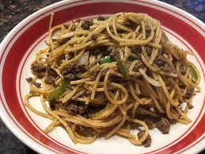

Yakisoba

Description
This is a recipe for probably the only edible thing I was served while in the military. Wait, wait, don't leave! It's actually really delicious, I promise. You can also make this way fancier by using actual soba noodles or more variety to the vegetables. This is the basic version that is cheap and easy to make.
Ingredients
- 2 pounds ground beef
- 1 chopped onion
- 1-2 chopped green peppers
- 2/3 cup of water
- 1/4 cup soy sauce
- 1 teaspoon garlic powder
- 1/2 teaspoon ground ginger
- 1/4 teaspoon black pepper
- 1 pound cooked spaghetti noodles
- 1 cup chopped green onions
Steps
- Brown the beef in a skillet.
- Add the onion and peppers once the beef is almost done cooking.
- Keep cooking and stirring until the meat is cooked well-done and the vegetables are tender.
- Mix the water, soy sauce, garlic powder, ginger, and pepper then add to the meat and vegetables. Stir well.
- Add the noodles and green onions. Mix well.